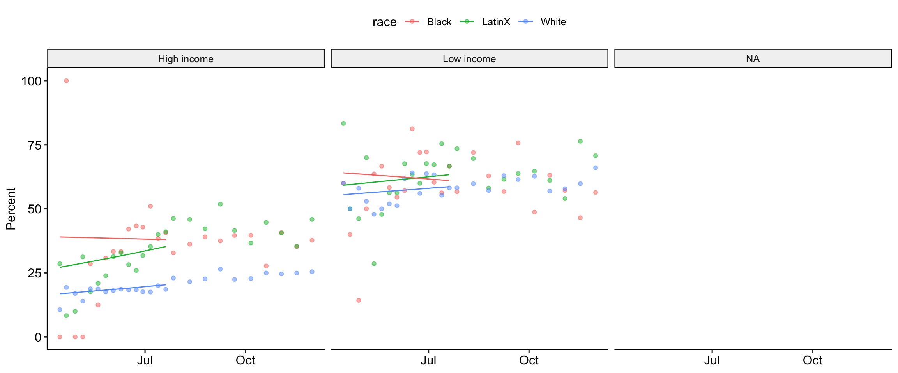

These analyses are based on responses collected from 1966 caregivers between the dates of August 11, 2020 and September 10, 2020. These caregivers represent a range of voices: 8.80% are Black/African American, 16.73% are LatinX, and 24.01% live at or below 1.5 times the federal poverty line. Proportions/percentages are calculated based on the item-level response rates, not out of the total sample size. The data for these analyses are not weighted.
Which needs are hard to pay for?: - Food - Housing - Utilities (electric, water, trash) - Healthcare - Social - Emotional - Childcare - Other
Caregivers grouped into two categories: trouble paying for 1+ basic need, or no trouble paying for any.
For these analyses, data collected in even numbered weeks starting in August were merged with data in the previous week – this was due to a shift to a recruitment strategy that prioritized recruiting underrepresented communities and marginalized caregivers every other week.
These analyses are based on responses collected from 3710 caregivers between the dates of April 14, 2020 and September 08, 2020. These caregivers represent a range of voices: 9.76% are Black/African American, 18.68% are LatinX, and 24.39% live at or below 1.5 times the federal poverty line. Proportions/percentages are calculated based on the item-level response rates, not out of the total sample size. The data for these analyses are not weighted.
##
## Call:
## glm(formula = material_hardship ~ Week * race_ethnic * poverty_cat,
## family = "binomial", data = hardship_scored)
##
## Deviance Residuals:
## Min 1Q Median 3Q Max
## -1.5821 -0.7355 -0.6619 1.0170 1.8799
##
## Coefficients:
## Estimate Std. Error z value
## (Intercept) -0.446478 0.229553 -1.945
## Week 0.002875 0.014349 0.200
## race_ethnicLatinX -0.964719 0.278212 -3.468
## race_ethnicWhite -1.176472 0.240413 -4.894
## poverty_catLow Income 0.500512 0.334742 1.495
## Week:race_ethnicLatinX 0.058673 0.017923 3.274
## Week:race_ethnicWhite 0.018722 0.015152 1.236
## Week:poverty_catLow Income 0.021110 0.022133 0.954
## race_ethnicLatinX:poverty_catLow Income 0.757145 0.412674 1.835
## race_ethnicWhite:poverty_catLow Income 1.618850 0.359495 4.503
## Week:race_ethnicLatinX:poverty_catLow Income -0.036220 0.027949 -1.296
## Week:race_ethnicWhite:poverty_catLow Income -0.051761 0.024001 -2.157
## Pr(>|z|)
## (Intercept) 0.051777 .
## Week 0.841210
## race_ethnicLatinX 0.000525 ***
## race_ethnicWhite 9.9e-07 ***
## poverty_catLow Income 0.134858
## Week:race_ethnicLatinX 0.001061 **
## Week:race_ethnicWhite 0.216605
## Week:poverty_catLow Income 0.340199
## race_ethnicLatinX:poverty_catLow Income 0.066546 .
## race_ethnicWhite:poverty_catLow Income 6.7e-06 ***
## Week:race_ethnicLatinX:poverty_catLow Income 0.195004
## Week:race_ethnicWhite:poverty_catLow Income 0.031037 *
## ---
## Signif. codes: 0 '***' 0.001 '**' 0.01 '*' 0.05 '.' 0.1 ' ' 1
##
## (Dispersion parameter for binomial family taken to be 1)
##
## Null deviance: 17316 on 13673 degrees of freedom
## Residual deviance: 15641 on 13662 degrees of freedom
## (1409 observations deleted due to missingness)
## AIC: 15665
##
## Number of Fisher Scoring iterations: 4
Which describes your family financially at this time?: - No problems - Minor problems - Major problems _ Extreme problems
For these analyses, data collected in even numbered weeks starting in August were merged with data in the previous week – this was due to a shift to a recruitment strategy that prioritized recruiting underrepresented communities and marginalized caregivers every other week.
These analyses are based on responses collected from 3710 caregivers between the dates of April 14, 2020 and September 08, 2020. These caregivers represent a range of voices: 9.76% are Black/African American, 18.68% are LatinX, and 24.39% live at or below 1.5 times the federal poverty line. Proportions/percentages are calculated based on the item-level response rates, not out of the total sample size. The data for these analyses are not weighted.
How worried are you about having enough money to pay for food to feed your household in the next month?
If you rent the place you currently live, how worried are you about being evicted in the next month?
If you own the home where you currently live, how worried are you about your mortgage being foreclosed on in the next month?
How worried are you about your utilities (water, electric, gas) being turned off in the next month?
Response options: - Not at all worried - Slightly worried - Somewhat worried - Very worried - Extremely worried
For these analyses, data collected in even numbered weeks starting in August were merged with data in the previous week – this was due to a shift to a recruitment strategy that prioritized recruiting underrepresented communities and marginalized caregivers every other week.
These analyses are based on responses collected from 1965 caregivers between the dates of August 11, 2020 and September 08, 2020. These caregivers represent a range of voices: 8.80% are Black/African American, 16.74% are LatinX, and 24.02% live at or below 1.5 times the federal poverty line. Proportions/percentages are calculated based on the item-level response rates, not out of the total sample size. The data for these analyses are not weighted.